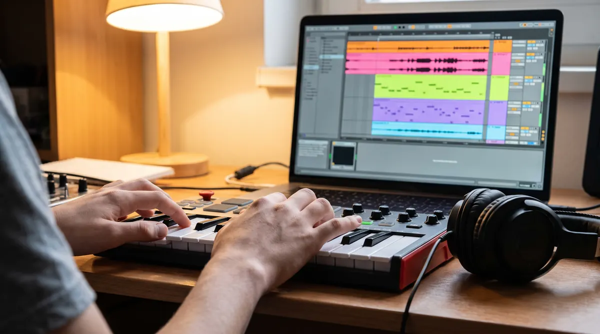
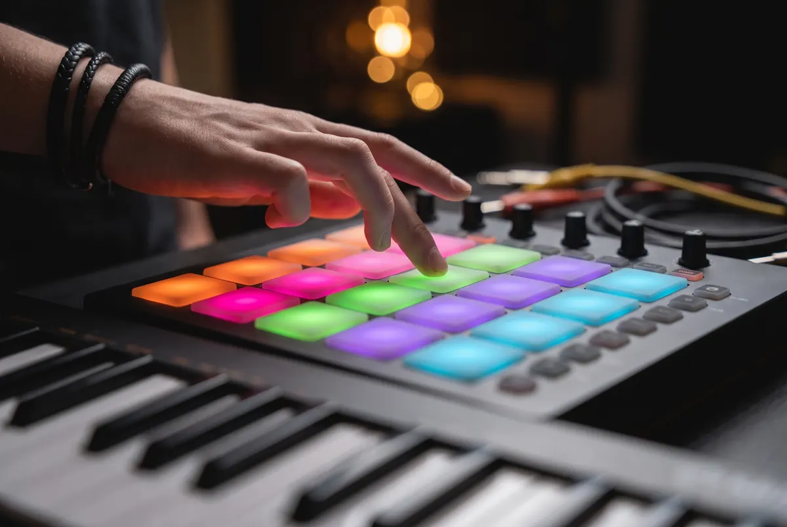
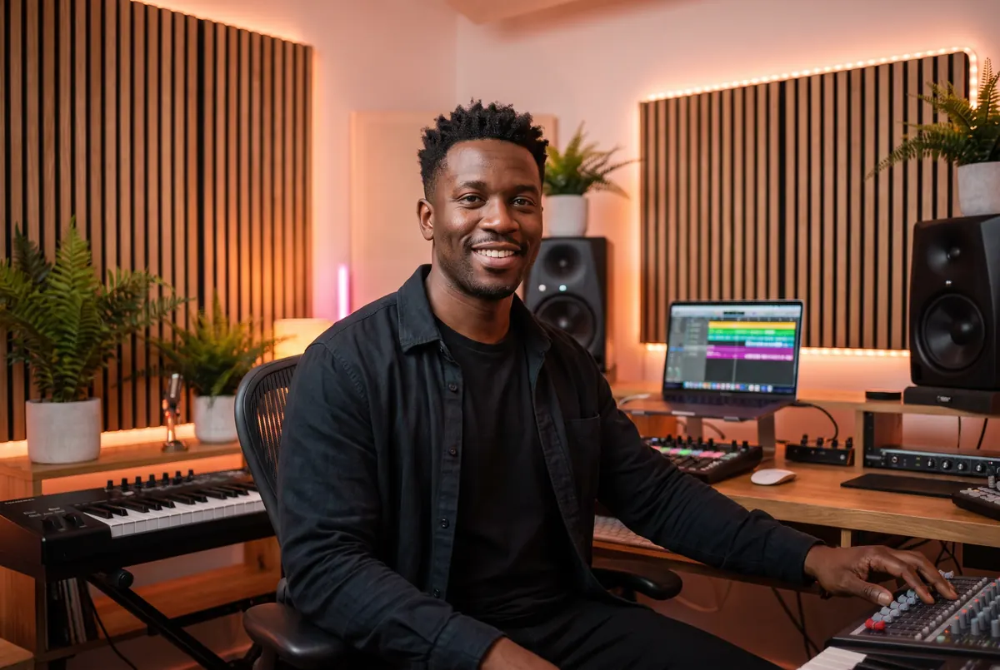

Music Production
Make your
first track.
From an idea you hum on the bus to a finished song you can share. Beats, chords, vocals, mixing and release, all in Fender Studio.
Teens and adults · No experience needed · In person or online

What you'll make
Everything between the idea and the drop.
You'll learn the whole process a working producer uses, one finished track at a time. Not tutorials you forget. Songs you made.
Beats and drums
Program grooves on pads and in the piano roll, from trap and Afrobeats to lo-fi and house.
Chords and melodies
Use a MIDI keyboard and what you learn in Piano by Ear to write progressions and hooks that stick.
Recording vocals
Set up a mic, record clean takes, comp the best parts and tune them so they sit right.
Sound design
Shape synths, chop samples and build your own sounds instead of only using presets.
Mixing
EQ, compression, reverb and balance. Make it hit on headphones, in the car and on a phone speaker.
Finish and release
Export, master and share. Get your song ready for streaming, your channel or Showcase Night.

Our DAW
We teach on Fender Studio.
A DAW (digital audio workstation) is where music gets made. We teach on Fender Studio because it's a real professional tool that is friendly from day one, and you can get started at home without spending a thing.
- A free version to practise on at home, with room to grow into the full Pro version
- Drag-and-drop arranging, built-in instruments and loops
- Works with any MIDI keyboard or pad controller
- Already on GarageBand, FL Studio or Ableton Live? The skills carry over, and we'll help you there too
The producer path
Four levels. A finished track at every one.
First Beat
Set up Fender Studio, learn the screen, program drums and build an eight-bar loop you're proud of.
Chords and Hooks
Use a MIDI keyboard and the piano roll to write chord progressions, basslines and melodies.
Arrange and Record
Turn a loop into a song with an intro, verse, chorus and bridge, then record and edit vocals.
Mix and Release
Balance, EQ, compression and effects, a simple master, and releasing your music to the world.



Questions
Production FAQ
What do I need at home?
A laptop (Mac or Windows) and a pair of headphones. A small MIDI keyboard helps a lot, and we can recommend affordable ones. In the Charlottesville studio, everything is provided.
Do I need to play an instrument first?
No. Plenty of producers start with drums and loops. That said, a little piano goes a long way, which is why Piano by Ear and Production work so well together.
I already use GarageBand, FL Studio or Ableton. Is that OK?
Yes. We teach on Fender Studio, but the ideas are the same in every DAW. Bring what you use and your teacher will meet you there.
Will I actually finish songs?
That's the point. Every level ends with a finished track, and Teen Producer Lab students premiere theirs at Showcase Night.
Got a beat in your head?
Let's get it out. Your first production lesson is free, in the studio or online.
Book my free lesson